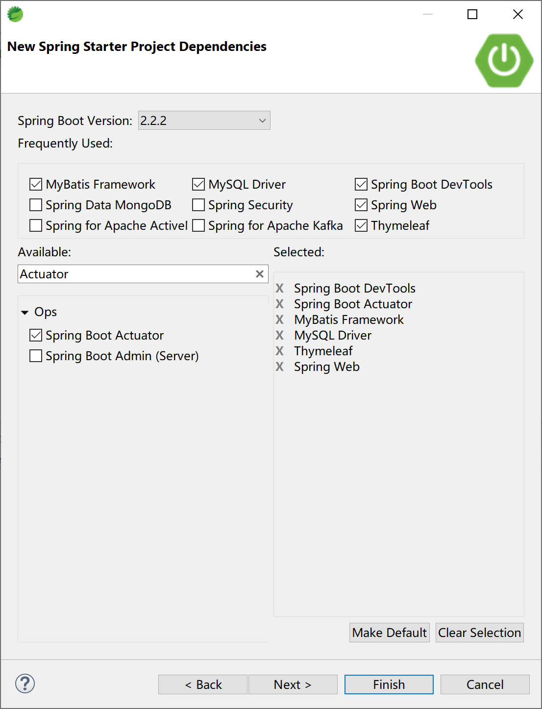
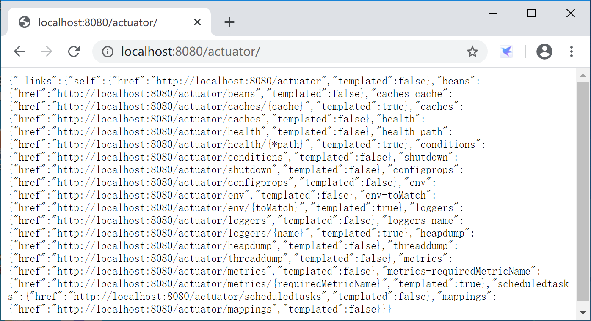
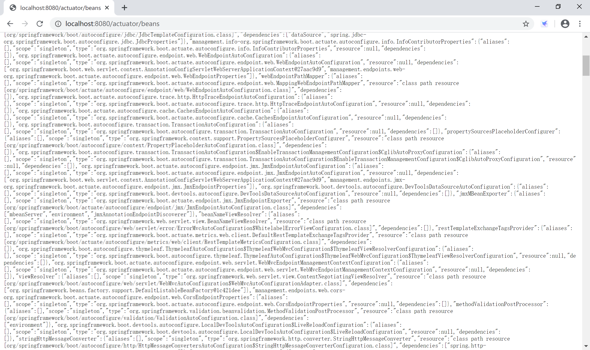
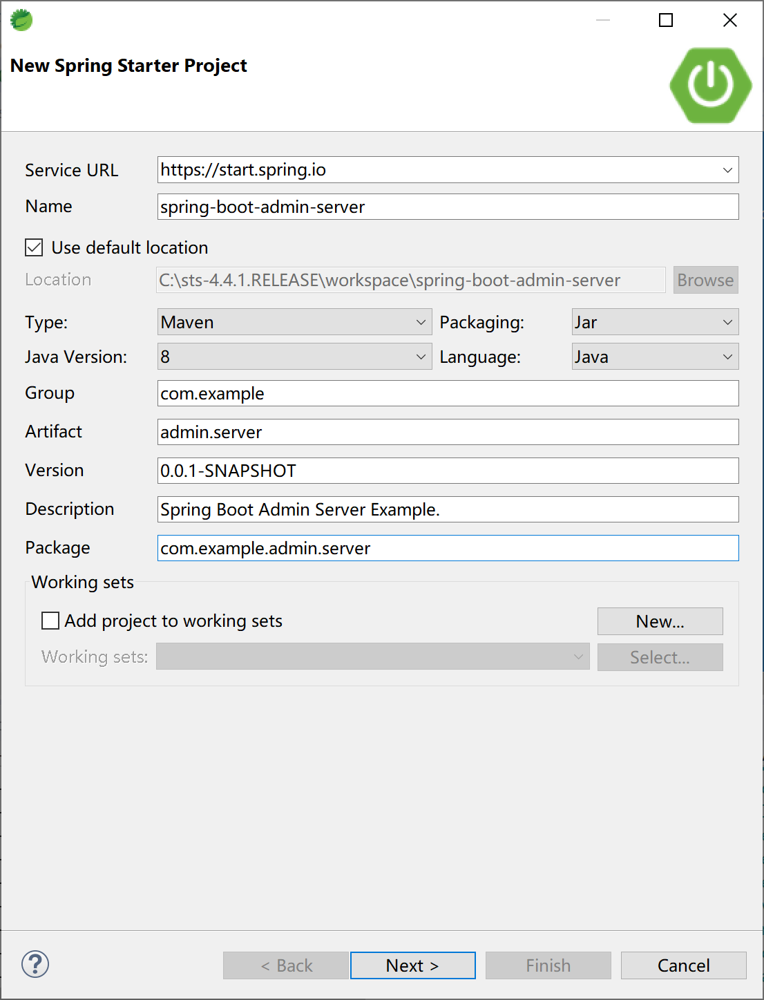
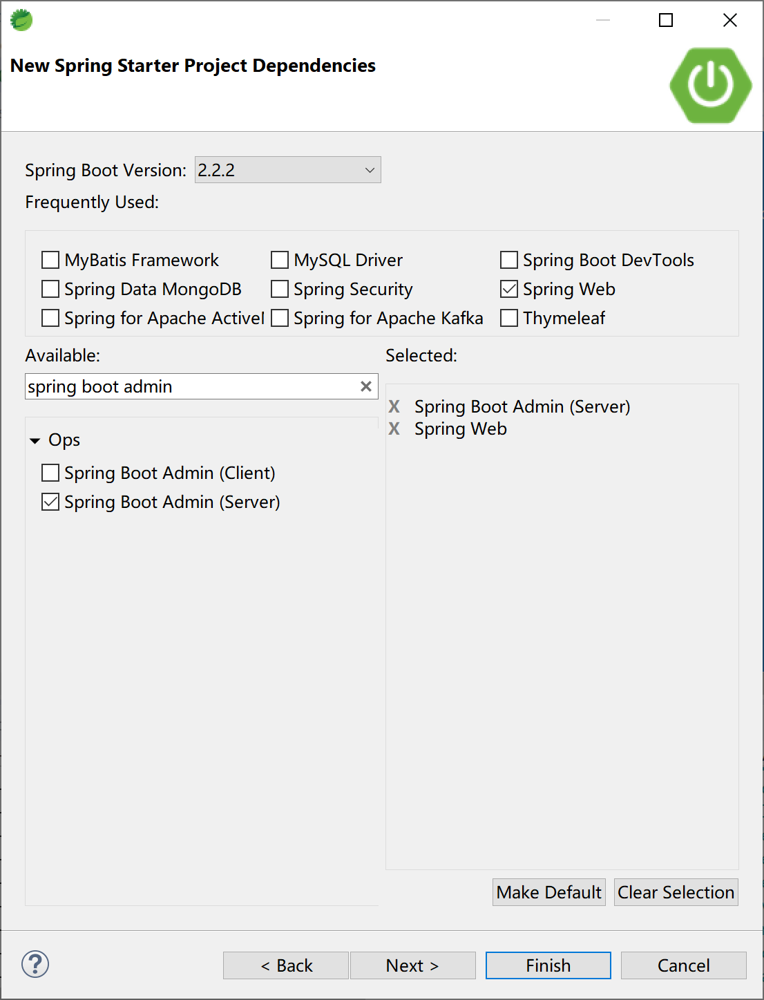
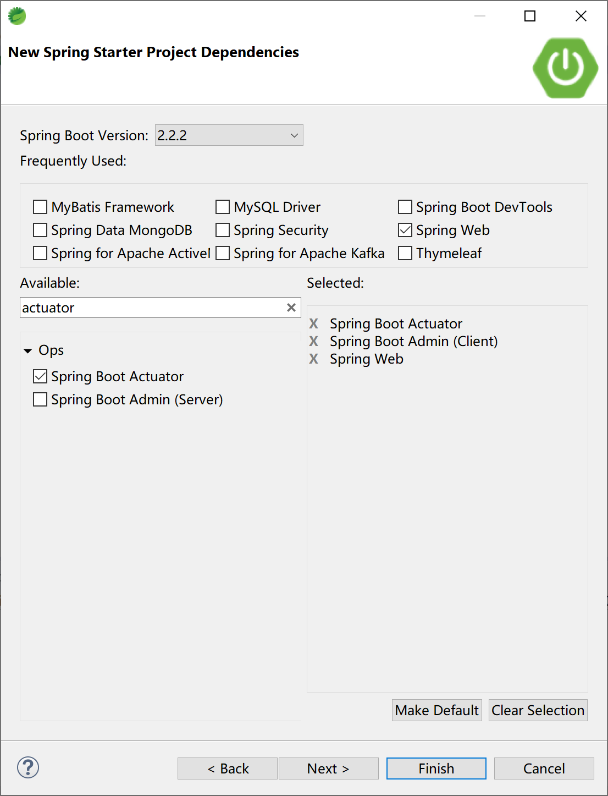
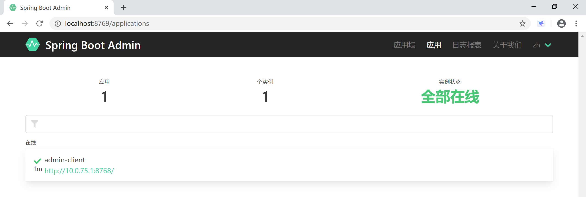
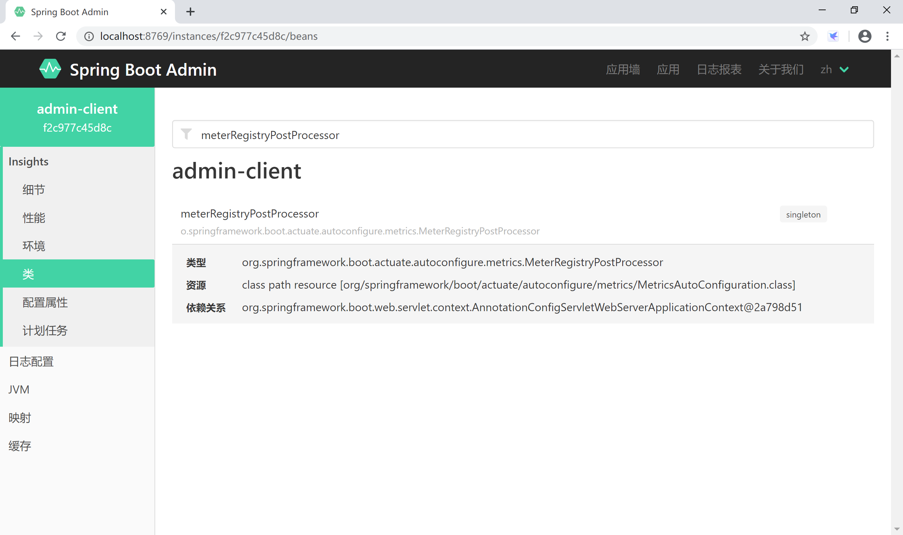

13.2 使用应用监控
Spring Boot应用在启用Actuator后，提供了非常原始的监控信息（json数据），当然我们也可以使用Spring Boot Admin来以一种直观的方式监控Spring Boot应用中的各种信息。
13.2.1 使用Actuator
创建新的Spring Boot应用，引入需要的启动器依赖，特别是spring-boot-starter-actuator。

在配置文件application.yml中，添加数据库连接及MyBatis配置信息。
# mysql数据源配置
spring:
datasource:
url: jdbc:mysql://localhost:3306/ssdemo?useUnicode=true&characterEncoding=utf-8&serverTimezone=GMT%2B8
username: root
password: 123456
driver-class-name: com.mysql.cj.jdbc.Driver
# mybatis 配置信息
mybatis:
mapper-locations: classpath:mapping/*Mapper.xml
type-aliases-package: com.example.actuator.entity
configuration:
map-underscore-to-camel-case: true
Spring Starter项目向导生成的项目pom依赖配置信息如下，最主要的启动器依赖是spring-boot-starter-actuator依赖配置项。
<dependency>
<groupId>org.springframework.boot</groupId>
<artifactId>spring-boot-starter-actuator</artifactId>
</dependency>
<dependency>
<groupId>org.springframework.boot</groupId>
<artifactId>spring-boot-starter-thymeleaf</artifactId>
</dependency>
<dependency>
<groupId>org.springframework.boot</groupId>
<artifactId>spring-boot-starter-web</artifactId>
</dependency>
<dependency>
<groupId>org.mybatis.spring.boot</groupId>
<artifactId>mybatis-spring-boot-starter</artifactId>
<version>2.1.1</version>
</dependency>
<dependency>
<groupId>org.springframework.boot</groupId>
<artifactId>spring-boot-devtools</artifactId>
<scope>runtime</scope>
<optional>true</optional>
</dependency>
<dependency>
<groupId>mysql</groupId>
<artifactId>mysql-connector-java</artifactId>
<scope>runtime</scope>
</dependency>
根据监控需要，在application.yml配置文件中打开除了info之外的所有（为了方便学习）监控端点。
# Actuator 端口配置
management:
endpoint:
shutdown:
enabled: true
endpoints:
web:
exposure:
include: "*"
exclude:
- info
启动应用后，访问http://localhost:8080/actuator/，查看监控端点信息。

在浏览器中进一步访问http://localhost:8080/actuator/beans端点，可以查看应用中注册的所有的bean。

本小节示例项目代码：
https://github.com/gyzhang/SpringBootCourseCode/tree/master/spring-boot-actuator
13.2.2 使用Spring Boot Admin
Spring Boot Admin是一个开源社区项目，用于管理和监控SpringBoot应用程序。 应用程序作为Spring Boot Admin Client向为Spring Boot Admin Server注册（通过HTTP）或使用SpringCloud注册中心（例如Eureka，Consul）发现。 UI是的AngularJs应用程序，展示Spring Boot Admin Client的Actuator端点上的一些监控。常见的功能或者监控如下：
- 显示健康状况
- 显示详细信息，例如
- JVM和内存指标
- micrometer.io指标
- 数据源指标
- 缓存指标
- 显示构建信息编号
- 关注并下载日志文件
- 查看jvm系统和环境属性
- 查看Spring Boot配置属性
- 支持Spring Cloud的postable / env-和/ refresh-endpoint
- 轻松的日志级管理
- 与JMX-beans交互
- 查看线程转储
- 查看http跟踪
- 查看auditevents
- 查看http-endpoints
- 查看计划任务
- 查看和删除活动会话（使用spring-session）
- 查看Flyway / Liquibase数据库迁移
- 下载heapdump
- 状态变更通知（通过电子邮件，Slack，Hipchat，......）
- 状态更改的事件日志（非持久性）
当前Spring Boot Admin最新版本为2.2.1版。
13.2.2.1 创建服务器端
创建Spring Boot Admin监控服务器。

选择Spring Web和Spring Boot Admin Server启动依赖。

其pom依赖文件主要内容如下：
<dependency>
<groupId>org.springframework.boot</groupId>
<artifactId>spring-boot-starter-web</artifactId>
</dependency>
<dependency>
<groupId>de.codecentric</groupId>
<artifactId>spring-boot-admin-starter-server</artifactId>
</dependency>
在配置文件application.yml中设置应用名称和服务器端口。
spring:
application:
name: admin-server
server:
port: 8769
在启动类中添加@EnableAdminServer注解。
package com.example.admin.server;
import org.springframework.boot.SpringApplication;
import org.springframework.boot.autoconfigure.SpringBootApplication;
import de.codecentric.boot.admin.server.config.EnableAdminServer;
@SpringBootApplication
@EnableAdminServer
public class SpringBootAdminServerApplication {
public static void main(String[] args) {
SpringApplication.run(SpringBootAdminServerApplication.class, args);
}
}
本小节示例项目代码：
https://github.com/gyzhang/SpringBootCourseCode/tree/master/spring-boot-admin-server
13.2.2.2 创建客户端
创建被监控的客户端。
添加Actuator和Spring Boot Admin Client启动器依赖。

在application.yml配置文件中添加Actuator配置，打开所有的监控端点。并将监控客户端注册到监控服务器上。
spring:
application:
name: admin-client
boot:
admin:
client:
url: http://localhost:8769
server:
port: 8768
management:
endpoints:
web:
exposure:
include: '*'
endpoint:
health:
show-details: ALWAYS
本小节示例项目代码：
https://github.com/gyzhang/SpringBootCourseCode/tree/master/spring-boot-admin-client
13.2.2.3 测试验证
依次启动server和client两个应用，打开浏览器，访问http://localhost:8769/ Spring Boot Admin Server，可以看到监控了1个客户端。

可以通过Spring Boot Admin Server提供的界面，方便地查看client应用通过Actuator输出的监控数据，相比原生的监控（json）数据友好多了。
